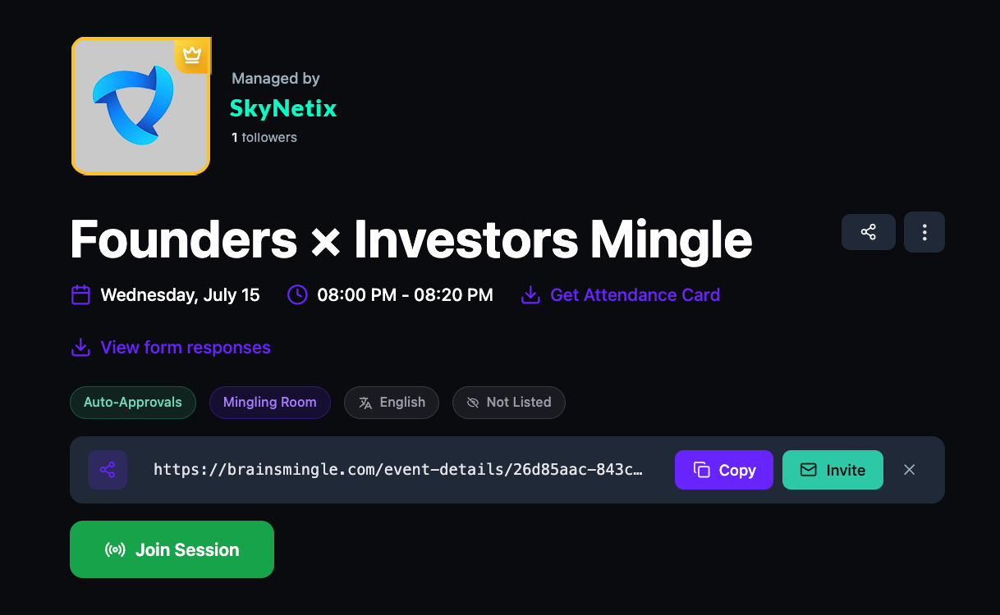
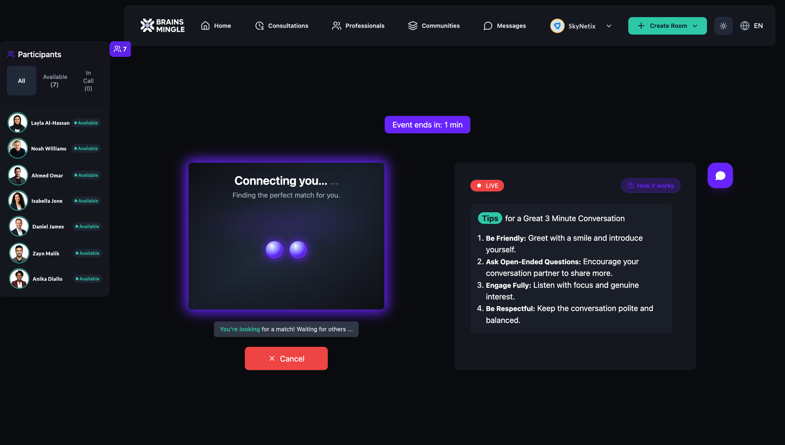

Manage a Speed Networking Room
After creating a speed networking room, the room detail page is where you share the event link, invite participants by email, view form responses, download the attendance card, and manage participants. When the event goes live, you can monitor participants and start the matching process.
Share the room link and invite participants
- Navigate to the room detail page by clicking the room title from your dashboard.
- The shareable link is displayed in the link bar below the room tags. Click Copy to copy the link to your clipboard.
- To invite participants by email, click Invite next to the link bar.

- In the Invite Guests by Email dialog, enter an email address and click + Add. You can add up to 5 email addresses per invitation.
- Optionally enter a Custom Message to include a personal note with the invitation (up to 500 characters).
- Click Send Invitations.

Download the attendance card
- On the room detail page, click Get Attendance Card next to the room date and time. This downloads a shareable card with the room details.
View form responses
- On the room detail page, click View form responses below the room date and time. This opens the collected registration form responses from attendees.
Please note: View form responses only appears if you enabled the registration form when creating the room.
Manage participants and the waitlist
- Click the Members tab on the room detail page.
- Under Participants, view the list of confirmed attendees.
- Click Waitlist to view and manage people waiting for approval.
Access recordings and discussions
- Click the Recordings tab to view any recorded sessions from this room.
- Click the Discussions tab to view post‑event discussions.
Join and run a live speed networking session
- On the room detail page, click Join Session to enter the live speed networking room.
- The left sidebar shows the Participants panel with three views: All, Available, and In Call.
- The right panel displays the event description and Tips for a great conversation. Click How it works for an overview of the speed networking flow.
- When ready to start matching, click Meet someone new. The platform finds a match and connects you into a 1:1 video call. Each person is matched only once — no repeats.

- After clicking Meet someone new, the platform displays a Connecting you… animation while it finds your match. You can click Cancel to stop the matching process.

Tip: Share the room link at least 48 hours before the event to maximize attendance. Speed networking works best with 10 or more participants.